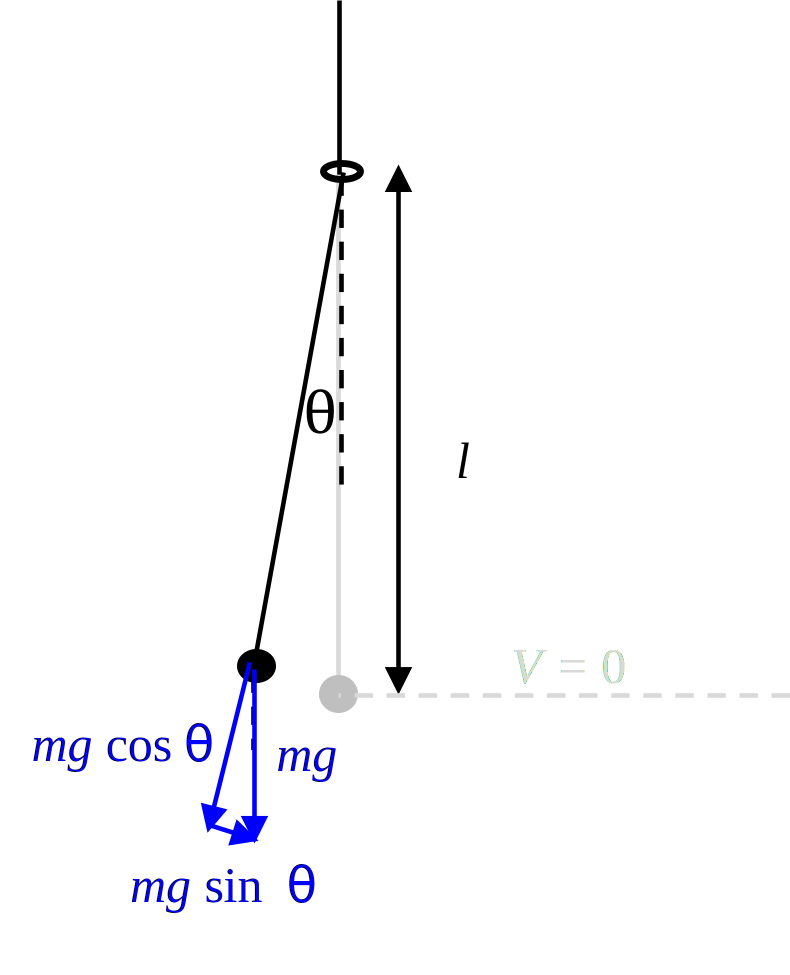

These notes are based on the example provided on p. 1026 of Ref. 1.
Consider a simple pendulum of length \(l\), where the bob has mass \(m\) and is subject to the downward force \(mg\) due to gravity:
The tension in the string is \(T = mg\), and \(\vec{F} = m\vec{a}\) reduces to a second-order ordinary differential equation in \(-\pi/2 \leq \theta\leq \pi/2\), which is the angle measured from the downward direction: \begin{equation}\label{eq:pend} mg \theta \simeq ml \frac{d^2 \theta}{dt^2}\,. \end{equation} The general solution of Eq. \eqref{eq:pend} is \[\theta = A \sin (\omega t) + B \cos(\omega t),,\] where \(\omega = \sqrt{g/l} = 2\pi f\), and thus the period is \begin{align}\label{eq:pend:tau} \tau = 1/f = 2\pi \sqrt{\frac{l}{g}} \end{align} Two approaches to calculating the radiation force exerted by the bob on the string: the first approach invokes the virial theorem to express the radiation force in terms the time-averaged energy, and the second approach uses the principle of adiabatic invariance (along with the work-energy theorem) to arrive at the same result.
The potential energy of the bob is \begin{align}\label{eq:pend:V} \mathcal{E}_V = mgl (1-\cos\theta) \simeq mgl (2+\theta^2/2) \end{align} such that \(V = 0\) in the equilibrium position \(\theta =0\). The force exerted by the bob on the hinge (which Beyer labels a "ring that can only move vertically" that constrains the length of the pendulum) equals \begin{align}\label{eq:pend:F} \vec{F} = \hat{l}\frac{\partial}{\partial l} mgl(1-\cos\theta) = \hat{l}mg (1-\cos\theta) \simeq \hat{l}mg(1+\theta^2/2)\,, \end{align} where \(\hat{l}\) is the radial unit vector. Taking the time average of Eq. \eqref{eq:pend:F} results in \begin{align}\label{eq:pend:F:av} {F}\rad = mg (1-\langle\cos\theta\rangle) \simeq mg(2+\langle\theta^2\rangle/2)\,, \end{align} since the pendulum spends equal time at angles \(\theta > 0\) and \(\theta < 0\). Combining Eqs. \eqref{eq:pend:V} and \eqref{eq:pend:F:av} yields \begin{align}\label{eq:pend:Frad:1} {F}\rad = \langle \mathcal{E}_V\rangle/l \,. \end{align} Since in a simple harmonic oscillator \(\langle \mathcal{E}_V \rangle = \langle \mathcal{E}_T\rangle = \langle \mathcal{E}\rangle/2\) (by the virial theorem, see Sec. 7.13 of Ref. 2), Eq. \eqref{eq:pend:Frad:1} can be written as \begin{align}\label{eq:pend:Frad} {F}\rad = \langle \mathcal{E}\rangle/2l \,. \end{align}
Equivalently, by the principle of adiabatic invariance, "under a very slow and continuous change of a constraint parameter, the product of the period \(\tau\) and the mean value of the kinetic energy \(\langle \mathcal{E}_T\rangle \) remains a constant": \begin{align}\label{eq:pend:adiabat} \delta(\tau \mathcal{E}_T) = \tau d\mathcal{E}_T + \mathcal{E}_T d\tau = 0\,. \end{align} Dividing Eq. \eqref{eq:pend:adiabat} by \(\tau T\) yields \begin{align}\label{eq:pend:adiabat:dt} \frac{d\mathcal{E}_T}{\mathcal{E}_T} + \frac{d\tau}{\tau} = 0\,. \end{align} The time-averaged work done by the bob on the string is \(dW = F\,dl\), which by the work-energy theorem is \(-d\mathcal{E}_T = -d\mathcal{E}\) [See Sec. 2.5 of Ref. 2]. Thus Eq. \eqref{eq:pend:adiabat:dt} becomes \begin{align}\label{eq:pend:adiabat:dt:2} -\frac{F\rad\,dl}{\langle \mathcal{E}\rangle} + \frac{d\tau}{\tau} = 0\,. \end{align} Combining Eq. \eqref{eq:pend:adiabat:dt:2} with Eq. \eqref{eq:pend:tau} yields \begin{align}\label{eq:pend:adiabat:dt:3} -\frac{F\rad\,dl}{\langle \mathcal{E}\rangle} + \frac{d\tau}{2\pi \sqrt{l/g}} = 0\,. \end{align} Solving Eq. \eqref{eq:pend:adiabat:dt:3} for \(F\) gives \begin{align}\label{eq:pend:adiabat:dt:4} F\rad = \frac{d\tau}{dl} \frac{\langle \mathcal{E}\rangle}{2\pi\sqrt{l/g}}\,. \end{align} Noting that \begin{align*} \frac{d\tau}{dl} = 2\pi \frac{d}{dl} \sqrt{l/g} = \sqrt{\frac{l}{g}} \frac{\pi}{g} \end{align*} yields the force from Eq. \eqref{eq:pend:adiabat:dt:4} \begin{align}\label{eq:pend:adiabat:F} F\rad = \frac{\langle \mathcal{E}\rangle \pi/g}{2\pi l/g} = \langle \mathcal{E}\rangle/2l\,. \end{align} Eq. \eqref{eq:pend:adiabat:F} recovers Eq. \eqref{eq:pend:Frad}.